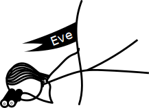

Введение
Цель алгоритмов шифрования - помочь людям обмениваться секретной или конфиденциальной информацией друг с другом, используя информационный эквивалент физических ключей. Чтобы облегчить обсуждение, мы скажем, что Боб хочет послать Алисе сообщение, чтобы Ева не смогла его увидеть. С симметричным алгоритмом шифрования ключ, используемый для шифрования сообщения, совпадает с ключом, используемым для его расшифровки. Это аналогично тому, как Боб помещает свое сообщение в ящик, закрывает его и отправляет Алисе для открытия. Большая проблема с таким подходом состоит в том, что Алиса нуждается в копии ключа, который использовал Боб. Это проблема курицы и яйца: для безопасного обмена информацией друг с другом Алиса и Боб уже должны были обмениваться секретной информацией. Если Боб когда-нибудь отправит ключ Алисе, Ева может легко перехватить его и использовать для чтения своих сообщений. Теоретически, Боб может дать Алисе ключ лично, но на практике это не очень хорошо работает. Представьте, что вам нужно ехать в офис какой-либо компании, чтобы дать им номер вашей кредитной карты, прежде чем вы сможете что-то купить онлайн. Это ужасно неудобно!
Решением проблемы являются алгоритмы асимметричного шифрования,
которые не используют один и тот же ключ для шифрования и дешифрования.
Продолжая нашу аналогию с ящиками и физическими ключами, Алиса отправляет
разблокированный замок всем, кто хочет отправлять ей сообщения.
Боб кладет свое сообщение в ящик, запирает его замком Алисы и отправляет обратно Алисе.
Поскольку Алиса - единственная, у кого есть ключ от замка,
только она может прочитать сообщение, как только оно окажется в запертом ящике.
Алгоритм Эль Гамаля является примером информационного алгоритма,
который работает по этому принципу.
В основу криптографической системы Эль Гамаля
положена сложность задачи вычисления дискретных логарифмов в конечном поле.
Существуют эффективные алгоритмы возведения числа в степень в конечном поле,
однако восстановление показателя (дискретного логарифма) по известному
основанию и его степени является сложной математической задачей.
На сегодняшний день не известно ни одного эффективного алгоритма
вычисления дискретных логарифмов больших чисел
Немного вводной теории
Перед тем, как мы познакомимся с алгоритмом Эль Гамаля, мы должны понять несколько базовых вещей.
Сравнения
Сравнение двух целых чисел по модулю натурального числа m — математическая операция,
позволяющая ответить на вопрос о том, дают ли два выбранных целых числа
при делении на m один и тот же остаток.
Попробуйте:
Операция сравнения по модулю является неотъемлемой частью многих систем шифрования. Главное свойство, которое делает сравнение по модулю настолько полезным для алгоритмов шифрования, заключается в том, что результат операции не раскрывает никакой информации о a.
Узнайте больше про модульную арифетику на Wikipedia.
Конечные циклические группы и подгруппы
Циклическая группа — это математическая группа, порожденная одним из элементов в группе G. Так как мы будем говорить об алгоритме Эль Гамаля, то нас интересуют только два типа групп:
- Группа целых чисел от 1 до p-1 по операции умножения (mod p) для некоторого простого числа p, которое известно как Z∗p
- Подгруппы Z∗p простого порядка
Узнайте больше о циклических группах на Wikipedia.
Работа в режиме шифрования
Алиса хочет, чтобы люди могли отправлять ей секретные сообщения, поэтому она создает открытый ключ (р, g, h),
которым она делится с миром и личный ключом x, который она никогда никому не рассказывает.
Боб хочет отправить Алисе секретное сообщение, поэтому он использует открытый ключ Алисы и одноразовый сессионный ключ R, создает зашифрованный текст (s1 , s2).
Вот как это работает:


1.Алиса выбирает простое число p
2.Выбирает целое число G, такое, что G - первообразный корень P, который генерирует циклическую подгруппу порядка n
3.Выбирает случайный секретный ключ, такой что 1 <= x <= N-1.
3.Вычисляет H = G^X mod P
5.Публикует открытый ключ (p,g,h).
1.Смотрит на ключ Алисы (p,g,y).
2.Боб выбирает случайное R, такое что 1 <= R <= N - 1
3.Создает сообщение m, такое что 0 < m < p. Если сообщение слишком большое, то Боб делит сообщение на части и шифрует их отдельно.
4.Вычисляет числа s1 = G^R mod P, s2 = (H^R)*M mod P.
5.Боб публикует шифр текст (s1, s2).
6.Алиса видит шифртекст (s1, s2).
7.Расшифровывает сообщение m = s1^(-x)*s2 mod P.
Интерактивная схема
Это небольшое приложение, которое вы можете использовать,
чтобы попробовать шифрование Эль Гамаля.
Это игрушечная реализация, поэтому, пожалуйста, даже не пытайтесь
использовать большие числа))
Алиса
-
-
Боб
Работа в режиме подписи
Подпись сообщений
Для подписи сообщения M выполняются следующие операции:
1) Вычисляется дайджест сообщения M: m = h(M) (Хеш-функция может быть любой)
2) Выбирается случайное число 1 < k < p-1 взаимнопростое с p-1 и вычисляется r = g^k(mod p)
3) Вычисляется число s = (m - xr)k^-1(mod p-1)
4) Подписью сообщения M является пара (r,s)
Проверка подписи
Зная открытый ключ (p,g,h), подпись (r,s) сообщения M проверяется следующим образом:
1) Проверяется выполнимость условий: 0 < r < p и 0 < s < p-1
2) Вычисляется дайджест сообщения M: m = h(M)
3) Подпись считается верной, если выполняется сравнение: y^r*r^s == g^m (mod p)
Атакуем алгоритм
 Пока Алиса и Боб обменивались секретиками, Ева чувствовала себя брошенной. Она решила научиться читать сообщения друзей. Давайте поможем ей в этом интересном занятии!
Атака одинаковых сессионных ключей
Пока Боб ненадолго отлучился, хитрая Ева смогла подсмотреть в переписку. Она увидела то, что все сообщения шифруются при помощи одного и того же сессионного ключа. Кроме того, она смогла запомнить одно из сообщений.
Такого набора данных хватит, чтоб Ева спокойно могла прочитать любое сообщение, которое будет отправлено с данными параметрами.
Предположим, что при отправке двух разных сообщений m и m' был использован один и тот же секретный ключ k. (Параметры p,g,h,x тоже одинаковые). Тогда рассмотрим шифртекст, который получается в таком случае
m: s1 = g^k mod p, s2 = m*(h^k) mod p
m': s1' = g^k mod p, s2' = m'*(h^k) mod p
Во-первых, s2'/s2= m'/m => m' = (s2'/s2')*m. Ура! При помощи такой формулы мы спокойно можем получить информацию о другом сообщении, которое было передано с таким же k.
Во-вторых, если мы перебором вычислим k, то мы сможем узнать и секретный ключ по формуле ... А это позволит не только расшифровывать все сообщения, но и подписывать сообщения!
Когда мы рассказали Еве о данной атаке, она была на седьмом небе от счастья. Но недолго она оставалась такой: Алиса и Боб догадались о том, что их сообщения были прочитаны, поэтому они устранили уязвимость: решили каждый раз генерировать случайный сессионный ключ. Но при этом они продолжили использовать относительно маленькие числа для ключей. Этим мы и воспользуемся!
Атака малого модуля
Атака состоит в том, что мы будем искать решение h = g^x mod p, зная h, g и p (помним, что параметры имеют относительно малое значение), алгоритмом baby step giant step.
Пусть есть уравнение h = g^x в цикличекой группе порядка p. Положим, что x = i*m - j, где m - заранее выбранная константа (обычно используют округленное вверх значение квадратного корня из p). i называют giant step, т.к увеличение параметра увеличивает x на m, а i - baby step (противоположность giant step).
Очевидно, что любое x из промежутка [0,p) можно представить в такой форме. Тогда уравение принимает вид: h = g^(m*i - j) => h*(g^(-m))^i = g^j
Алгоритм предварительно вычисляет g^j для некоторых j. Потом корректируется значение m и пробуются различные значения i.
Давайте рассмотрим пример:
20 = 5^x (mod 53)
В данном случае g = 5, h = 20 и p = 53, и мы хотим узнать x. Для начала определим квадратный корень из p-1, и округлим до ближайшего целого:
m = ceil(sqrt(p-1)) = ceil(sqrt(52)) = 7
Затем мы вычислим g^j (mod p) от 1 до m и занесем информацию в виде {g^j (mod p), j}
{1: 0, 5: 1, 25: 2, 11: 3, 42: 4, 51: 5, 43: 6, 3: 7}
Например: Если i = 0, мы получаем 5^6 mod 53 дает 43 {43:6}
Теперь у нас есть список пар от 0 до квадратного корня из p-1. Затем мы проходимся по значениям h (g^-m)^x (mod p) пока мы не найдем совпадения в таблице. Тогда мы умножаем число на m и добавляем число, которое сопоставлено в таблице.
Тут уже сложно использовать ручные вычисления, поэтому мы написали простую программу для Евы.
Добавить программу
Атака Meet in the Middle
Очередная атака, которую мы попробуем называется Meet in the Middle (встреча в середине).
Не стоит путать эту атаку с Man in the Middle (человек по середине), в которой Ева
притворяется Алисой и Бобом, читающая сообщения, которые Боб шифрует своим ключом,
вместо Алисы, и отправляющую сообщения Алисе после шифрования их ключом Алисы.
Если соблюдается ряд условий и сообщение m, которое Боб посылает Алисе, достаточно короткое,
то Ева может восстановить m, если она сможет перехватить s2,
когда Боб посылает свой шифротекст Алисе.
В частности, Meet in the Middle работает только в том случае, если:
- m состоит из B бит, причем Ева знает B, и B является небольшим числом.
- m можно разделить на две части таким образом, что m=(m1)(m2). Пусть m1 состоит из битов b1, а m2 - из битов b2.
- Ева знает n. Поскольку сессионный ключ Боба k обладает свойством 1 ≤ k ≤ n-1, ему также необходимо каким-то образом определить n. Если он может, то Ева может тоже.
- m не является элементом подгруппы, порожденной g. Это кажется совершенно маловероятным. Однако, порядок n подгруппы, генерируемой g, часто выбирается небольшим по соображениям эффективности.
- Порядок n подгруппы, порожденной g, имеет свойство, что n ≤ (p-1)*2^−b. Опять же, возможно, что n мало по соображениям эффективности.
Если все магическим образом будут выполнены все условия,то Ева может действовать следующем образом:
Она знает, что h = g^x (mod p)
и что s2 = m*(h^r) (mod p)
Возведем обе части в степень n: s2^n = (m^n)*(h^nr) (mod p)
Это бесполезно как часть атаки, если m является элементом подгруппы, порожденной g,
потому что тогда m^n=1
(поскольку все элементы подгруппы генерируют эту подгруппу, хотя и в другом порядке)
Однако если это не так, вспомним, что gn=g0=1, поскольку подгруппа, порожденная g, циклична, так что
h^(kn)=g^(xkn)=(g^n)^(xk)=1^(xk)=1
Получаем, что s2^n = m^n (modp).
Используя предположение, что m = (m1)(m2): v^n=(m^n_1)(m^n_2) (modp) => (v^n)(m^−n_2)=m^n_1(modp)